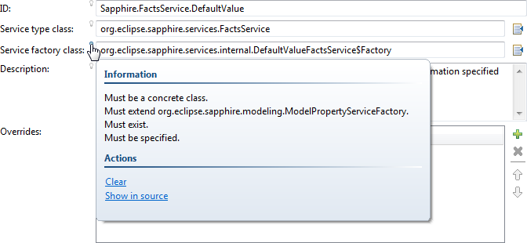

Many aspects of Sapphire can be extended by third parties.
The ContentProposalService provides a conduit for content assist in property editors. If a property has this service, content assist will be automatically enabled in the property editor. The manner in which content assist is presented is specific to the presentation, but usually involves a popup window with proposals, activated by some combination of key strokes (such as CTRL+SPACE).
The framework provides an implementation of ContentProposalService for properties with @PossibleValues annotation or a custom PossibleValuesService, but this service can also be implemented directly by adopters.
The DependenciesAggregationService combines the data from all applicable dependencies services in order to produce a single set of dependencies. A dependency is a model paths that points to parts of the model that the property depends on. A property listens on all of its dependencies and triggers refresh when any of the dependencies change.
An implementation of this service is provided with Sapphire. This service is not intended to be implemented by adopters. See DependenciesService instead.
The DependenciesService produces the set of model paths that point to parts of the model that the property depends on. A property listens on all of its dependencies and triggers refresh when any of the dependencies change.
Although custom implementations are supported, in most cases the supplied implementation that is configured via @DependsOn annotation should be sufficient.
Example
@DependsOn( "Name" )
ValueProperty PROP_ID = new ValueProperty( TYPE, "Id" );
Value<String> getId();
void setId( String value );Other annotations, such as @NoDuplicates can also inject implied dependencies (via their own DependenciesService implementations). For instance, placing @NoDuplicates annotation on a Name property automatically adds "#/Name" dependency.
If declarative approach is not sufficient, a custom DependenciesService implementation can be supplied.
Example
public class CustomDependenciesService extends DependenciesService
{
@Override
protected void compute( Set<ModelPath> dependencies )
{
// Compute the list of extensions.
}
}@Service( impl = CustomDependenciesService.class )
ValueProperty PROP_NAME = new ValueProperty( TYPE, "Name" );
Value<String> getName();
void setName( String value );The FactsAggregationService combines the data from all applicable facts services in order to produce a single list of facts. A fact is a short statement describing property semantics.
An implementation of this service is provided with Sapphire. This service is not intended to be implemented by adopters. See FactsService to contribute facts.
When a property is described to a user in documentation one does it with a series of short statements that define its semantics, such as "must be specified" or "maximum value is 100". When a property is described to Sapphire one does it with a series of annotations, such as @Required or @NumericRange. This duplicate specification is a maintenance problem.
A FactsService provides a means to dynamically derive statements about property's semantics based on property's metadata. The derived facts can then be presented to the user as part of documentation, property editor information popup and in other relevant places.
A single facts service can produce multiple facts and multiple facts services can be active concurrently for a given property. See FactsAggregationService for an easier way to consume all facts.
Sapphire includes a number of FactsService implementations.
##facts-servicess##Example
This screen capture shows user experience with some of the provided FactsService implementation. See if you can match facts in the screen capture to service implementations above.

Adopters can provide custom FactService implementations either globally using Sapphire extension system or at the property level using @Service annotation.
Example
A simple global FactsService implementation that is triggered by a hypothetical @Since property annotation.
public class SinceVersionFactsService extends FactsService
{
@Override
protected void facts( List facts )
{
Since since = property().getAnnotation( Since.class );
facts.add( "Since version " + since.version() + "." );
}
public static class Factory extends ServiceFactory
{
@Override
public boolean applicable( ServiceContext context,
Class<? extends Service> service )
{
return context.find( ModelProperty.class ).hasAnnotation( Since.class );
}
@Override
public Service create( ServiceContext context,
Class<? extends Service> service )
{
return new SinceVersionFactsService();
}
}
}The service implementation is registered in META-INF/sapphire-extension.xml file.
<extension xmlns="http://www.eclipse.org/sapphire/xmlns/extension">
<service>
<id>Example.SinceVersionFactsService</id>
<type>org.eclipse.sapphire.services.FactsService</type>
<context>Sapphire.Property.Instance</context>
<factory>example.SinceVersionFactsService$Factory</factory>
</service>
</extension>Facts can also be statically specified for a given property by using @Fact annotation. Use @Facts annotation to specify multiple facts. The facts contained in these annotations are surfaced by an included FactsService implementation (id:Sapphire.FactsService.Static).
Example
// *** ExampleOne ***
@Fact( statement = "Important fact.")
ValueProperty PROP_EXAMPLE_ONE = new ValueProperty( TYPE, "ExampleOne" );
Value<String> getExampleOne();
void setExampleOne( String value );
// *** ExampleMultiple ***
@Facts( { @Fact( statement = "First important fact." ), @Fact( statement = "Second important fact." ) } )
ValueProperty PROP_EXAMPLE_MULTIPLE = new ValueProperty( TYPE, "ExampleMultiple" );
Value<String> getExampleMultiple();
void setExampleMultiple( String value );The FileExtensionsService produces the list of file extensions that are allowed for a path value property.
Although custom implementations are supported, in most cases the supplied implementation that is configured via @FileExtensions annotation should be sufficient. In many cases, specifying file extensions is as simple as listing them with a comma in between.
Example
@Type( base = Path.class )
@AbsolutePath
@MustExist
@ValidFileSystemResourceType( FileSystemResourceType.FILE )
@FileExtensions( expr = "jar,zip" )
ValueProperty PROP_FILE_PATH = new ValueProperty( TYPE, "FilePath" );
Value<Path> getFilePath();
void setFilePath( String value );
void setFilePath( Path value );File extensions can also be specified via an expression that takes into account values of other properties.
Examples
@FileExtensions( expr = "${ Extension }" )@FileExtensions( expr = "${ LossyFormat ? "jpeg,jpg" : "png,gif" }" )If declarative approach is not sufficient, a custom FileExtensionsService implementation can be supplied.
Example
public class CustomFileExtensionsService extends FileExtensionsService
{
@Override
protected void initFileExtensionsService()
{
// Optionally register listeners to invoke refresh method when the list of extensions
// may need to be updated.
}
@Override
protected void compute( List<String> extensions )
{
// Compute the list of extensions.
}
@Override
public void dispose()
{
super.dispose();
// Remove any listeners that were added during initialization.
}
}@Type( base = Path.class )
@AbsolutePath
@MustExist
@ValidFileSystemResourceType( FileSystemResourceType.FILE )
@Service( impl = CustomFileExtensionsService.class )
ValueProperty PROP_FILE_PATH = new ValueProperty( TYPE, "FilePath" );
Value<Path> getFilePath();
void setFilePath( String value );
void setFilePath( Path value );The InitialValueService produces a value to assign to a property when the containing model element is created.
The concept of an initial value is different from a default value. The initial value is explicitly assigned to the property during containing model element's creation. This includes writing to the backing resource (such as an XML document). In comparison, the default value is used when null is read for a property from the backing resource. As such, the default value is only visible to model consumers (such as the user interface), while the initial value is persisted.
Whether you use an initial value or a default value is frequently dictated by the requirements of the backing resource. As an example, let's consider an XML document that stores phone numbers. In this XML document, the phone number element has a type child element which contains a value like home, mobile, work, etc. Let's further say that semantically, we wish to use mobile phone number type unless specified differently. Now, if the XML schema dictates that the phone number type element is required, we would need to specify "mobile" as the initial value. If the phone number type element is optional, it would be better to specify "mobile" as the default value.
In many situations, the initial value is static and should be configured using @InitialValue annotation.
Example
@Required
@PossibleValues( values = { "home", "mobile", "work", "other" }, invalidValueSeverity = Status.Severity.OK )
@InitialValue( text = "mobile" )
ValueProperty PROP_TYPE = new ValueProperty( TYPE, "Type" );
Value<String> getType();
void setType( String type );When the initial value varies due to runtime conditions, a custom implementation of InitialValueService can be provided.
Example
public class PhoneTypeInitialValueService extends InitialValueService
{
@Override
public String text()
{
// Compute the initial value.
}
}@Required
@PossibleValues( values = { "home", "mobile", "work", "other" }, invalidValueSeverity = Status.Severity.OK )
@Service( impl = PhoneTypeInitialValueService.class )
ValueProperty PROP_TYPE = new ValueProperty( TYPE, "Type" );
Value<String> getType();
void setType( String type );The PossibleTypesService enumerates the possible child element types for a list or an element property. Each returned type is required to derive from the property's base type.
In majority of situations, the set of possible types is static and should be configured using @Type annotation.
Example
@Type( base = Shape.class, possible = { Circle.class, Triangle.class, Rectangle.class } )
ListProperty PROP_SHAPES = new ListProperty( TYPE, "Shapes" );
ModelElementList<Shape> getShapes();When the set of possible types varies due to model extensibility or runtime conditions, a custom implementation of PossibleTypesService can be provided.
Example
public class ShapesPossibleTypesService extends PossibleTypesService
{
@Override
protected void initPossibleTypesService()
{
// Optionally register listeners to invoke refresh method when the list of possible types
// may need to be updated.
}
@Override
protected void types( SortedSet<ModelElementType> types )
{
// Compute the list of possible types.
}
@Override
public void dispose()
{
super.dispose();
// Remove any listeners that were added during initialization.
}
}@Type( base = Shape.class )
@Service( impl = ShapesPossibleTypesService.class )
ListProperty PROP_SHAPES = new ListProperty( TYPE, "Shapes" );
ModelElementList<Shape> getShapes();If the set of possible types is not specified via @Type annotation or via a custom PossibleTypesService implementation, the set of possible types is defined to be a singleton set composed of the property's base type.